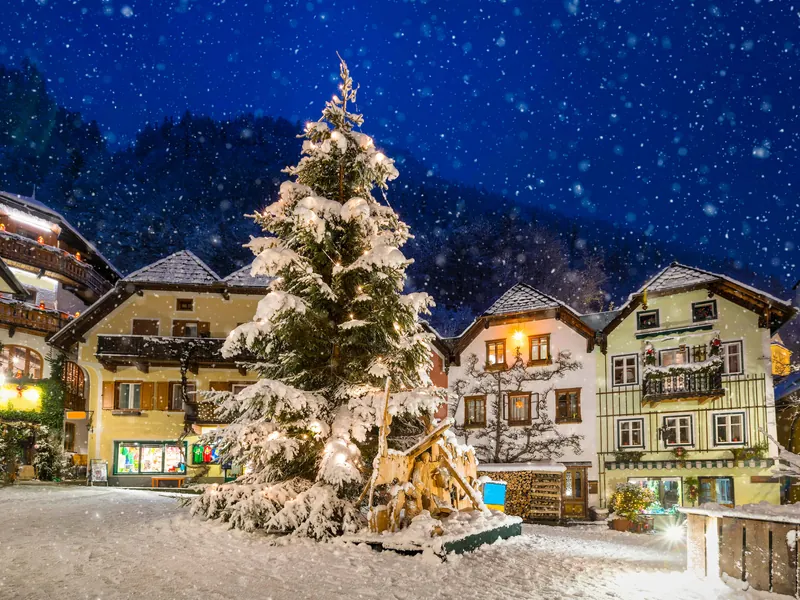
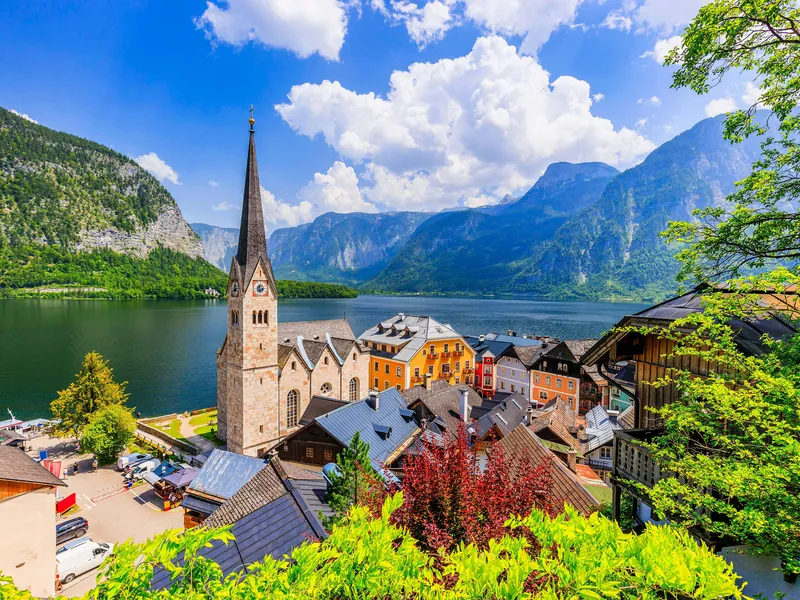

Guide de Hallstatt → Tous les guides
Marché de Noël de Hallstatt : faut-il construire un voyage autour ?
Réponse courte : non. Et pas pour la raison que vous croyez. Le marché de Noël de Hallstatt n'est ni petit ni décevant. Il dure un jour.
En 2026, le mardi 8 décembre, sur la Marktplatz. Tout est remballé le soir. Pas de saison, pas de rythme de week-end, pas quatre semaines de chalets. Qui réserve un week-end de décembre pour un marché arrivera dans un village décoré où rien ne se vend.
Décembre à Hallstatt a d'autres arguments, et de vrais marchés de l'Avent sont à une heure de route.
En décembre, le jour est trop court pour le passer à déchiffrer carte et panneaux. Le parcours audio TouringBee va du ponton au belvédère du patrimoine mondial : dix-sept étapes en une heure et demie environ, carte et audio hors ligne. Vous écoutez en marchant au lieu de piétiner dans le froid devant chaque panneau.
Vous préparez tout le voyage ? Commencez par notre guide complet de Hallstatt.

Ce qu'est vraiment ce marché
Un jour, sur la Marktplatz, entrée libre. En 2026, le mardi 8 décembre, à partir de 10h00. Les sources divergent sur la fermeture : la commune et l'office de tourisme régional annoncent 18h00, le site du village et l'agenda du Salzkammergut 18h30. Tablez sur cette demi-heure.
Officiellement un Christkindlmarkt. La commune annonce musique, artisanat, spécialités traditionnelles, biscuits, Glühwein et punch ; la présentation touristique ajoute le poisson fumé du lac et la saucisse grillée. Au milieu, une crèche des élèves de l'école du bois, la HTBLA Hallstatt, et un sapin illuminé. Personne ne publie de nombre de chalets : « une vingtaine de stands », « des dizaines de kiosques » ne viennent d'aucune source officielle.
Le 8 décembre est la Mariä Empfängnis, l'Immaculée Conception, jour férié dans toute l'Autriche. En 2026, il tombe un mardi : ne soyez pas surpris par le jour de la semaine.
Vérifiez la date pour votre année
Des pages annoncent encore à Hallstatt un marché de plusieurs semaines, horaires de week-end à l'appui. Faux pour 2026 : le calendrier de la commune ne mentionne que le 8 décembre. Le marché s'est aussi tenu le 8 décembre en 2025 et le jour férié est à date fixe — mais aucune page officielle n'énonce de règle permanente.
Avant de réserver, vérifiez le programme de votre année sur le site de la commune.
Ce que contient réellement l'Avent à Hallstatt
L'agenda officiel de l'Avent à Hallstatt tient en trois événements et cinq jours :
- Vendredi 4 décembre — course de Krampus pour enfants, Marktplatz, 17h00–20h00
- Samedi 5 décembre — course de Krampus, Marktplatz, 18h00–23h00
- Mardi 8 décembre — le marché de Noël, Marktplatz
Deux sur trois sont des Krampus, autre chose qu'un vin chaud sous les chants : figures cornues, cloches de vache, verges de bouleau, beaucoup de bruit. Si c'est ce que vous cherchez, visez le premier week-end de décembre — cela vaut le déplacement.
Le reste de l'Avent, le village ne vend pas, il décore : sapin sur la Marktplatz et crèche installée dès la fin novembre. L'office de tourisme régional parle de fenêtres décorées et d'une odeur de pain d'épices. Agréable à traverser, mais pas un marché.
Alors, faut-il construire un voyage autour du marché de Noël de Hallstatt ?
Pour un grand marché de l'Avent classique, non. Mais si vous êtes dans la région le 8 décembre, il mérite une heure de votre après-midi — le village y fait quelque chose pour lui-même, pas une production montée pour les visiteurs.
Une journée de décembre à Hallstatt se tient toute seule, si c'est le village que vous voulez : pas de pic estival, fumée des cheminées, cygnes sur l'eau malgré le gel, branches de sapin là où poussent les géraniums en été.
Les marchés de l'Avent qui valent le déplacement
| Marché | Dates 2026 | Horaires | Depuis Hallstatt |
|---|---|---|---|
| Salzburger Christkindlmarkt Domplatz et Residenzplatz | 19 nov. – 1er janv. | Tous les jours ; lun–jeu 10h00–20h30, plus tard le week-end | À la journée ; voir notre itinéraire depuis Salzbourg |
| Wolfgangsee Advent St. Wolfgang, St. Gilgen, Strobl | 20 nov. – 20 déc. | Mer–dim ; fermé lun et mar — mais ouvert les 7 et 8 déc. | Par Bad Ischl ; trois villages reliés par bateau |
| Bad Ischl Christkindlmarkt à la Trinkhalle | 20 nov. – 20 déc. | Mer–dim 10h00–18h00 | 40–50 min en bus |
| Gosau Bergweihnacht au musée de plein air | 28–29 nov., 5–6 déc. | Sam 11h00–18h00, dim 13h00–19h00 | En remontant la vallée |
| Bad Goisern Meisteradvent Hand.Werk.Haus | 12–13 déc. | 10h00–18h00 | Environ 20 min en bus |
Salzbourg est le plus grand de la liste : 97 stands sur les deux places d'après l'annuaire officiel des exposants. Wolfgangsee se marie le mieux avec Hallstatt — son exception du mardi tombe le jour du marché de Hallstatt, qui devient donc aussi un jour où un marché d'un mois est accessible.
La sélection Avent de l'office national du tourisme autrichien inclut le Wolfgangsee, pas Hallstatt.
Vous préparez une journée d'hiver à Hallstatt ?
Une autre date à part : saint Nicolas arrive par le lac
Pas à Hallstatt, et pas un marché. Le dimanche 29 novembre 2026 à 15h30, saint Nicolas traverse le lac jusqu'à la plage d'Obertraun — non pas en calèche, mais à bord d'une Fuhr, la barque de bois traditionnelle à fond plat, inscrite à l'inventaire autrichien du patrimoine culturel immatériel. Les Amis des enfants d'Obertraun tiennent quelques stands de boissons chaudes au débarcadère.
Pensé pour les familles du coin, pas pour les visiteurs : c'est tout l'intérêt. Obertraun est à dix minutes de Hallstatt.
À quoi ressemble décembre
La lumière, la vraie contrainte
À la mi-décembre, lever vers 07h45, coucher vers 16h15 : huit heures et demie environ. Mais ces horaires officiels surestiment ce que vous aurez. Hallstatt est posé dans une cuvette sous le Dachstein, et la crête prend le soleil bien avant l'horizon.
Cela dépend de la maison. L'Oberösterreichische Nachrichten s'est penché sur la question : certaines maisons du village ne voient pas le soleil plus de 120 jours par an, et celle d'un ancien maire reste sans lumière directe du 2 novembre au 8 février. Un historien local a dressé un tableau d'une cinquantaine de foyers du quartier de Lahn : pour chacun, la date où le soleil part et celle où il revient. Chez lui, il est revenu le 15 janvier à 11h36.
En pratique : premier train du matin, photos entre 10h00 et 13h00 environ. Arriver à 14h00, c'est perdre le meilleur de la lumière directe — une bonne partie du village sera déjà à l'ombre des montagnes.
Tirer parti d'une journée courte
Le parcours dans le village prend environ une heure et demie : dix-sept étapes du ponton au belvédère du patrimoine mondial. Téléchargez-le avant de partir — carte et audio hors ligne.

La neige, sur laquelle on ne peut pas compter
Hallstatt est à 511 m — bas, pour une carte postale alpine. La station comparable la plus proche, Bad Ischl à 507 m, donne sur les normales 1991–2020 une moyenne de décembre d'exactement 0 °C, 123 mm de précipitations et 1,8 heure de soleil par jour. La couverture neigeuse y est relevée environ 15,6 jours dans le mois.
À lire avec précaution : cette moyenne de long terme n'est pas une probabilité de neige pour un séjour donné. Préparez-vous à l'humide et au gris, la neige en bonus. Le village enneigé des photographies existe — ce n'est simplement pas la journée moyenne.
La foule, qui ne prend pas ses quartiers d'hiver
Hallstatt a enregistré environ 1,2 million de visiteurs à la journée en 2025, contre quelque 132 000 nuitées. L'ORF rapportait en décembre 2025 que le flux se poursuit l'hiver, Noël et le Nouvel An parmi les périodes chargées. Le maire adjoint a évalué les jours de pointe à 10 000 visiteurs, pour un village d'environ 750 habitants. Le plafond de 54 par jour vaut pour les autocars ; pas de quota équivalent pour les arrivées en voiture ou en train.
Décembre est plus calme que juillet, mais la quinzaine autour de Noël n'en est pas la partie calme.
Ce qui est ouvert
Mine de sel, funiculaire et Skywalk — saison d'hiver de l'exploitant jusqu'au 6 janvier 2027. Dernière visite de la mine à 15h00 ; dernière descente du funiculaire à 16h30 sur la page de l'exploitant, quand deux sites régionaux annoncent 16h00. Billet combiné mine et funiculaire 49 € adulte, 23 € enfant ; funiculaire seul 29 €. La mine, le Skywalk et une nouvelle cabine ont rouvert le 29 août 2026 après un an de travaux. Aucune fermeture pour les fêtes n'est publiée : vérifiez si vous voyagez du 24 au 26 décembre.
L'ossuaire — en hiver, du mercredi au dimanche, de 11h30 à 14h30 ou 15h30 selon la page officielle consultée. Deux euros adulte, cinquante centimes enfant. Une source dit que la carte passe, une autre espèces uniquement : prenez de la monnaie.
Le bateau — la compagnie présente sa ligne comme le seul service régulier à l'année sur un lac autrichien. 4,00 € l'aller, environ sept minutes, dernier départ du village en début de soirée. Par mauvais temps, les traversées peuvent être annulées : en décembre, la réserve n'est pas théorique.
Se restaurer — certaines adresses ferment en novembre et rouvrent début décembre pour Noël et le Nouvel An ; les établissements d'été au bord du lac restent fermés tout l'hiver. Décembre est mieux servi que novembre ou février, mais renseignez-vous sur le vôtre.
En voiture — la règle autrichienne d'équipement hivernal s'applique du 1er novembre au 15 avril dès que la route porte neige, neige fondue ou verglas. En pratique, une location doit être en pneus hiver. Les parkings de Hallstatt ne publient pas de fermeture saisonnière, et la navette à bagages circule de 09h00 à 19h00.
Les domaines skiables voisins ouvrent plus tard : Dachstein West le 4 décembre 2026, le Krippenstein le 19 décembre, sous réserve de neige.
Questions fréquentes
Quand a lieu le marché de Noël de Hallstatt en 2026 ?
Le mardi 8 décembre, sur la Marktplatz, de 10h00 à 18h00 ou 18h30 selon la source. Un seul jour : pas de marché de plusieurs semaines à Hallstatt.
Le marché de Noël de Hallstatt ouvre-t-il le week-end ?
En 2026, seulement le mardi 8 décembre. Il s'est aussi tenu le 8 décembre en 2025, mais vérifiez le programme de votre année avant de miser sur un week-end.
Vaut-il la peine de construire un voyage autour ?
Pas pour un vrai marché de l'Avent. Salzbourg ouvre du 19 novembre au 1er janvier, Bad Ischl du 20 novembre au 20 décembre, à 40–50 minutes. Si vous êtes dans la région le 8, allez-y.
Hallstatt est-il décoré pour Noël en décembre ?
Oui — dès la fin novembre, sapin et crèche sur la Marktplatz, fenêtres éclairées dans tout le village. La décoration tient toute la saison, contrairement au marché.
Y aura-t-il de la neige ?
Impossible d'y compter. En moyenne sur le long terme, la neige tient au sol environ la moitié des jours de décembre à cette altitude, et la moyenne du mois est de 0 °C. Prévoyez du gris et de l'humide ; la neige sera un bonus.
La mine de sel est-elle ouverte en décembre ?
Saison d'hiver jusqu'au 6 janvier 2027, dernière visite à 15h00. Aucune fermeture pour les fêtes n'est publiée — à confirmer si vous voyagez entre le 24 et le 26 décembre.
Combien de temps dure le jour en décembre ?
Environ huit heures et demie sur le papier, moins de soleil direct en réalité : la montagne le prend tôt, et certaines rues de Lahn n'en reçoivent pas du tout pendant des mois. Arrivez par le premier train du matin.
Pour aller plus loin
Le verdict
Ne construisez pas un voyage autour d'un marché d'un jour : pour des chalets de l'Avent, Salzbourg ou le Wolfgangsee. Prenez quand même une journée de décembre à Hallstatt — le village y est plus calme, plus sombre et plus étrange qu'en été, sa meilleure version. Si vos dates tombent sur le 8 décembre, allez sur la Marktplatz et achetez le poisson fumé.
Si vous venez pour Hallstatt même, consacrez la courte journée au village plutôt qu'à un écran. Le parcours TouringBee : dix-sept étapes du ponton au belvédère du patrimoine mondial, hors ligne.
Hallstatt à pied — l’audioguide
- 17 enregistrements signés par un historien, et qui font sourire
- Carte hors ligne et position GPS : aucune donnée mobile consommée
- Vous partez le jour et à l’heure qui vous arrangent, pause déjeuner comprise
- Des illustrations pour savoir exactement ce que vous avez sous les yeux
- Sur iPhone comme sur Android, dans l’application TouringBee
Les billets pour l’ossuaire, la mine de sel et le musée restent à votre charge.

Parcourir Hallstatt avec le guide audio — 9,99 €
Dates, prix et horaires vérifiés en septembre 2026 sur les sites des exploitants et de la commune de Hallstatt. Les dates de l'Avent changent chaque année : confirmez le programme du 8 décembre auprès de la commune avant de réserver. Certains liens de cette page sont affiliés : si vous réservez par leur intermédiaire, nous touchons une petite commission, sans surcoût pour vous. Cela ne change jamais nos recommandations.